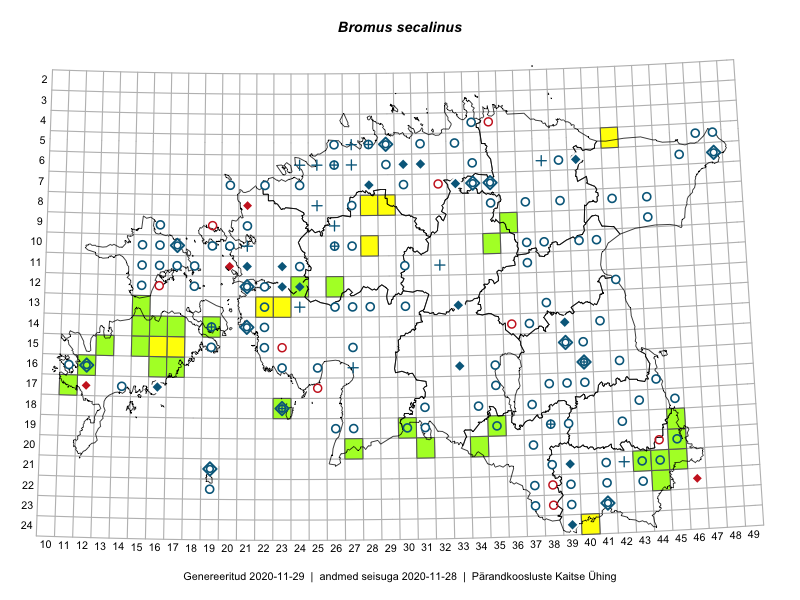

Bromus secalinus
Uuendatud: 2016-12-07
Kaardile koondatud taksonid: Bromus secalinus L.

Kaart põhineb 26 kirjel, neist vaatlusi 24 ja eksemplare 2. Taksonit on leitud 17 ruudust.
| Ruut | Vaatleja(d) | Vaatlusaeg | Kirje tüüp | Viide andmebaasikirjele |
|---|---|---|---|---|
| 21-45 | Toomas Kukk | 2015-06-23T14:30Z | ruut/ala | vaata PlutoFis |
| 21-45 | Toomas Kukk | 2015-06-23 | punkt | vaata PlutoFis |
| 13-23 | Kirsi Loide, Marje Loide | 2015-08-18 | ruut/ala | vaata PlutoFis |
| 16-16 | Sirje Azarov, Aira Alasi | 2015-07-28 | ruut/ala | vaata PlutoFis |
| 20-45 | Kersti Püssa, Rein Kalamees | 2015-07-16 | ruut/ala | vaata PlutoFis |
| 08-28 | Aat Sarv | 2015-08-03 | ruut/ala | vaata PlutoFis |
| 19-45 | Toomas Kukk, Tiit Hallikma | 2016-06-17 | ruut/ala | vaata PlutoFis |
| 20-34 | Silvia Pihu, Illi Tarmu | 2015-07-13 | ruut/ala | vaata PlutoFis |
| 20-27 | Aat Sarv, Eerik Leibak | 2016-07-19 | ruut/ala | vaata PlutoFis |
| 10-35 | Toomas Kukk, Tiit Hallikma | 2016-07-25 | ruut/ala | vaata PlutoFis |
| 21-43 | Thea Kull, Peedu Saar | 2016-08-05 | ruut/ala | vaata PlutoFis |
| 15-17 | Peedu Saar, Toomas Kukk | 2016-08-13 | ruut/ala | vaata PlutoFis |
| 13-22 | Maret Gerz, Aat Sarv | 2016-07-05 | punkt | vaata PlutoFis |
| 13-22 | Aat Sarv, Maret Gerz | 2016-07-05 | ruut/ala | vaata PlutoFis |
| 08-29 | Sander Laherand, Rein Kalamees | 2016-07-08 | ruut/ala | vaata PlutoFis |
| 22-44 | Peedu Saar, Karin Kikas | 2016-08-19 | ruut/ala | vaata PlutoFis |
| 22-44 | Karin Kikas, Peedu Saar | 2016-08-19 | punkt | vaata PlutoFis |
| 15-15 | Meeli Mesipuu | 2016-09-23 | punkt | vaata PlutoFis |
| 19-45 | Tiit Hallikma, Toomas Kukk | 2016-06-17 | punkt | vaata PlutoFis |
| 05-42 | Tiit Hallikma, Tõnu Ploompuu | 2016-07-26 | ruut/ala | vaata PlutoFis |
| 20-31 | Meeli Mesipuu, Mari Metsoja | 2016-07-19 | punkt | vaata PlutoFis |
| 20-31 | Meeli Mesipuu, Mari Metsoja | 2016-07-19 | punkt | vaata PlutoFis |
| 08-29 | Rein Kalamees, Sander Laherand | 2016-07-08 | punkt | vaata PlutoFis |
| 20-45 | Meeli Mesipuu | 2016-08-28 | punkt | vaata PlutoFis |
| 16-16 | Raivo Kalle | 2016-08-06 | eksemplar | vaata PlutoFis |
| 16-16 | Raivo Kalle | 2016-08-06 | eksemplar | vaata PlutoFis |